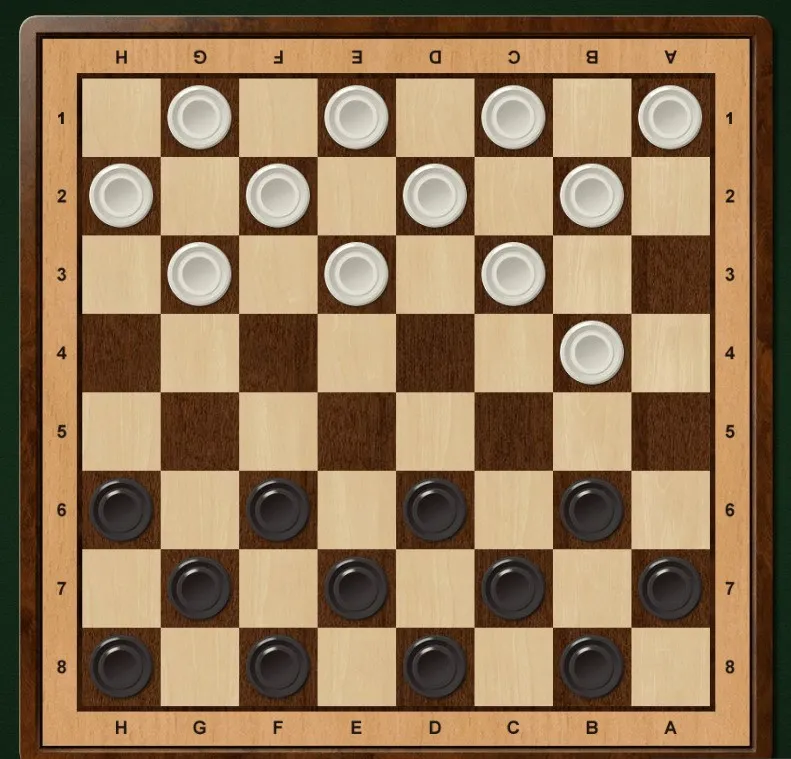

Цель игры в шашки Задача, которую ставят перед собой противники, садящиеся за стол с шашечной доской, зависят от конкретного турнира, в рамках которого они между собой встречаются. Как правило, цель банальна – победа в партии. Но исключением могут быть соревнования, где победа в конкретно взятом раунде и итоговый успех разделены. Тогда целью, которую ставит перед собой игрок, может быть и ничейный исход.
